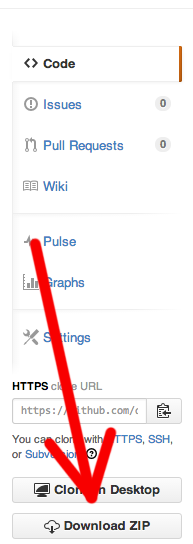
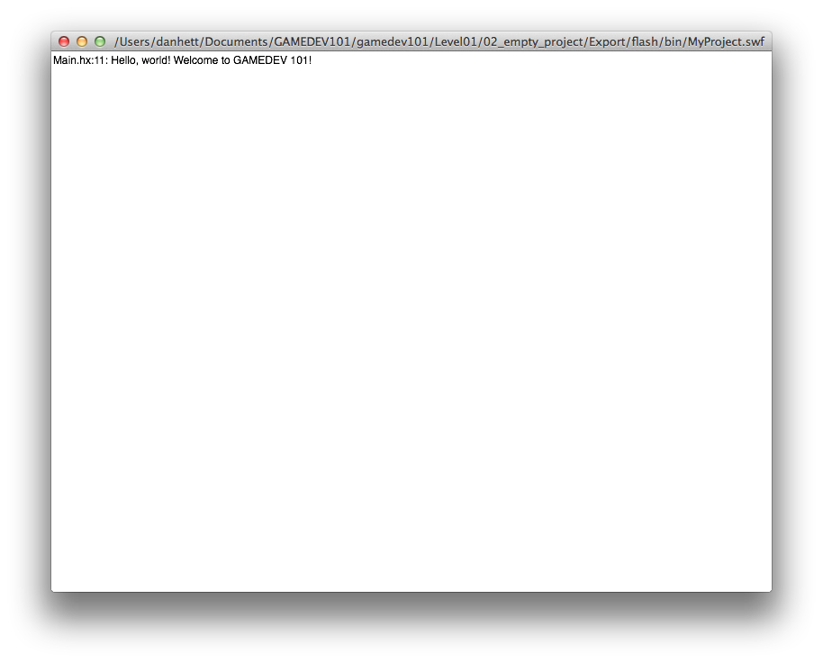

First thing's first
If you haven't installed Stencyl or Haxe, hit the software page for full instructions. Once that's done, continue below!
Get the code
The Gamedev 101 content is available as a single download, which contains both empty 'starter' projects as well as finished examples of everything for reference. The content is stored on Github - this is so it can be easily kept up to date and distributed. The code is located at:
https://github.com/danhett/gamedev101
If you know how to use Github already: simply clone the repo into a convenient location and you're good to go.
If you don't know how to use Github: Simply go to the link above, and look for a big button that says "Download as ZIP" - it'll be on the right hand side of th screen and it looks like this:

We recommend downloading everything to the desktop if you're just starting out, but anywhere it's easily accessible is fine.
Find the code
For Stencyl projects, we'll be starting from scratch, so this stuff doesn't apply. For Haxe projects, you'll want to follow these steps:
We'll be using the command line to run our code, so if you still have it open from installation, then great! If not, re-open it. Haxe should already be installed, so what we need to do now is to pick a project and try to compile it. The first thing to do is tell the command line that we want to work in a specific folder (i.e. the game we want to work with).
One way to do this with the command line is to type the command "cd" (which stands for "change directory") followed by a space, and then the path to your project. So for example, if I had a project called "Test" on my desktop, I might run:
cd /Desktop/Test
Alternatively, a much easier way is to type the "cd" and the space, but then drag the folder onto the command line window. This will put the path in for you. This means you don't have to type much, and there's no risk of making a mistake.
To check this has worked, you can type "ls" into the command line to list all the stuff that's in the folder. You should see a printed list of the same files you'd see if you looked it at via Windows/OSX/whatever. If you see the list, you're done! Until you change it, your terminal will stay pointed at this folder.
Compile the project
Finally, we get to compile a Haxe project! As a test, we recommend pointing your terminal to the empty project in the source files - Level_01/02_empty_project.
Once you're in this directory, type the following command to run your game:
lime test flash
This will compile the project, and what you should hopefully see if a blank game window with a "hello, world!" message in it:

(If you don't see it, you might need Flash Player installed. Get it here.)
One of the really cool things about Haxe/OpenFL (and one of the big reasons we use the command line) is that you your code can run on all sorts of platforms. The command above will compile your code into a Flash game, but if you prefer a HTML5 version it's as simple as running:
lime test html5
This will launch your default web browser, with the game running in it! Magic.
Haxe will even let you create proper native programs with the same command, so you could do:
lime test mac
This will create a Mac application from the same code.
Pro Tips
One of the most useful things you can do on the command line is to repeat the same commands. For example, if you keep compiling and re-compiling your game as you make changes, typing the "lime test flash" line every time would get very tedious. To get around this, you can press the up and down arrows when on the command line to skip back through all the stuff you've ever typed into it. This means, to re-compile your project again you can just press the up key, and then the enter key. Handy!